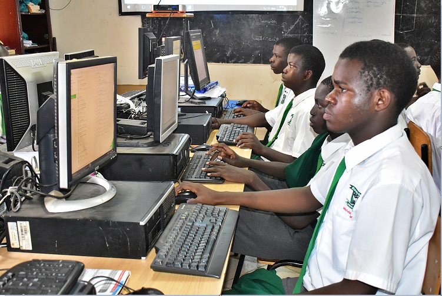

Beyond the Grades: How Atlas High School is Redefining Excellence in 2025

KASANGATI — Following the 2025 UCE and UACE results, Enjuba Ya Kasangati sat down with Mr. Wasswa Ronald, the Head Teacher of Atlas High School, to explore the strategy behind their academic surge.
The 'Economics Comeback' & Arts Performance
While many students across Uganda are opting for Entrepreneurship to avoid Sub-Maths, Atlas High is seeing a significant resurgence in Economics. The school ranked #58 among the best Entrepreneurship teaching schools last year, but Economics is proving to be a powerhouse.
Mr. Wasswa explains that the administration ensures teachers have every resource required to simplify complex topics. This synergy between the staff room and the main office has removed the fear of "tough" subjects.
The Digital Frontier: Wi-Fi and ICT Facilities
Atlas High has embraced the digital age by providing a robust Computer Facility equipped with Free Wi-Fi. This allows learners to broaden their minds beyond the traditional textbook.

Students engaged in digital research. The school allows supervised use of personal laptops for advanced study.In a unique move, the school allows **supervised use of personal laptops**. This digital empowerment has boosted the research capacity of the students, giving them a competitive edge in their UNEB preparations.
Science Excellence & Dedicated Staff
The 2025 results also highlighted a surge in Biology and Chemistry performance. This is largely credited to the school's laboratory technicians and a teaching staff that Mr. Wasswa describes as "highly motivated and passion-driven."
Agribusiness: Practical Wealth Creation
The school integrates Animal Husbandry and Soil Science using their expansive land. Students gain hands-on experience with chicken, goat, and rabbit projects, preparing them to start businesses immediately after graduation.
Experience Atlas Excellence
For admissions and inquiries, contact the Head Teacher directly via WhatsApp.
Contact Mr. Wasswa (0774288454)